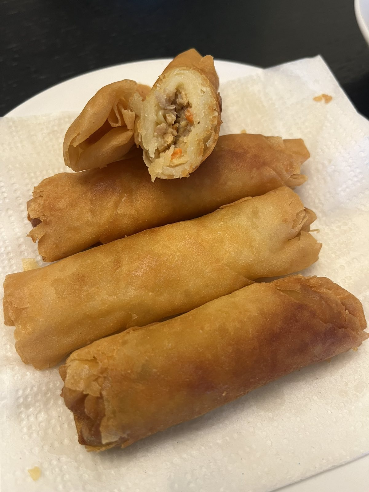
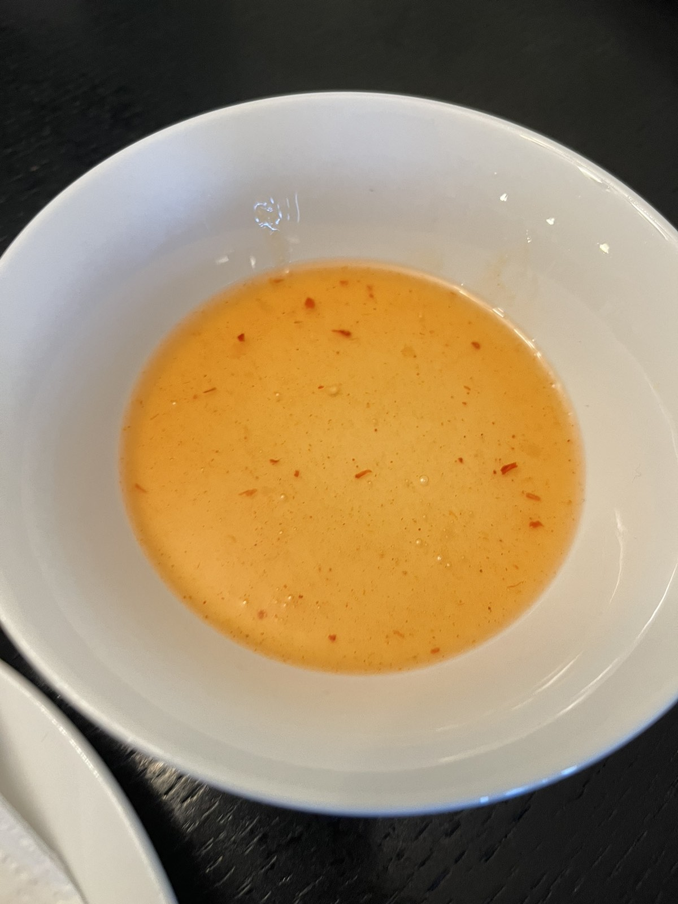

Helpful Tips
I like to use ground chicken with chopped water chestnuts, shredded carrots, green
onions, and garlic for extra flavor and crunch. Feel free to substitute ground pork or
beef and add minced shrimp if you like. You can also use jicama (singkamas), diced bell
peppers, celery, onions, and raisins.
Do a taste test! Fry a small amount of the meat mixture and adjust seasonings as
needed before wrapping.

Use fresh spring roll wrappers. Check manufacturing dates on packages, as the older the
wrappers get, the less pliable and harder they are to roll.
While rolling, cover the rest of the wrappers with a damp cloth to prove them from
drying out.
Do not overfill wrappers to ensure quick cooking. Roll the logs as tight as possible
to prevent grease from seeping in.
Lumpia are best deep-fried. Use enough frying oil to cover the rolls fully. Watch
your temperatures! If too low, the lumpia will absorb more grease. If too high, the
wrappers will burn before fully cooked.
Cook in batches to prevent the oil from plummeting, and bring the oil back up to the
optimal 350F to 375 F range before adding the next round. Skim the oil in between batches
to remove any burnt bits.

Do not drain on paper towels, or they'll get soggy with the steam. Drain on a wire rack set
over a baking sheet or in a fine-mesh sieve set over a bowl to catch oil drips.
If transporting them to a party, leave the container partially open to keep the lumpia crispy
as long as possible.